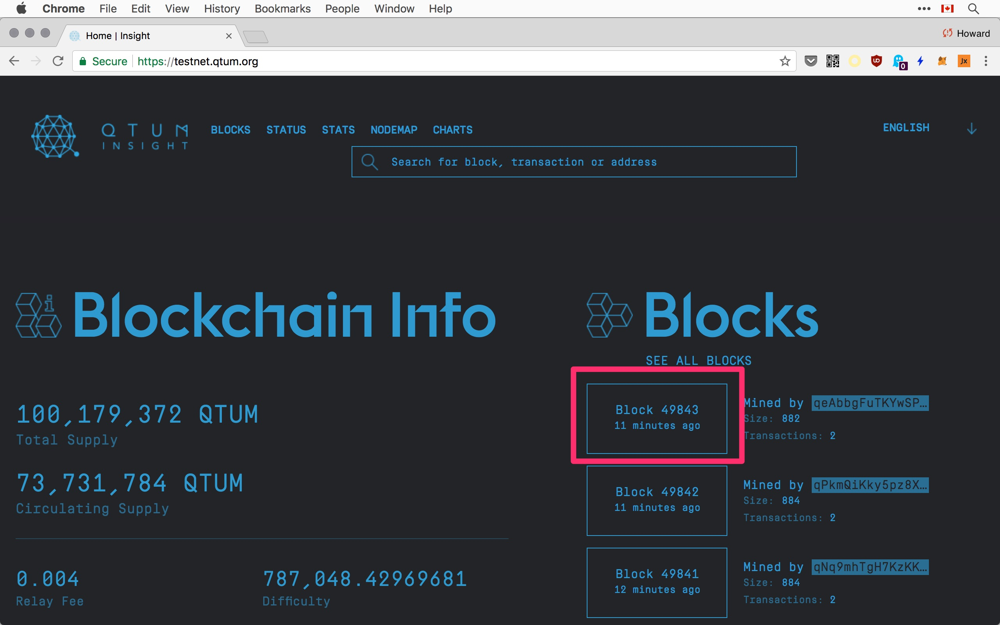
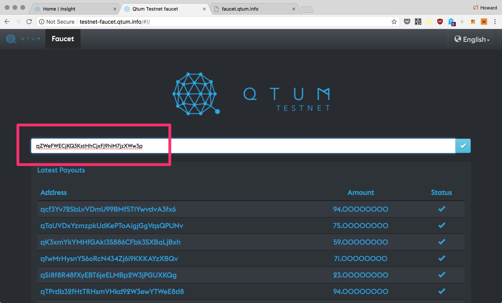
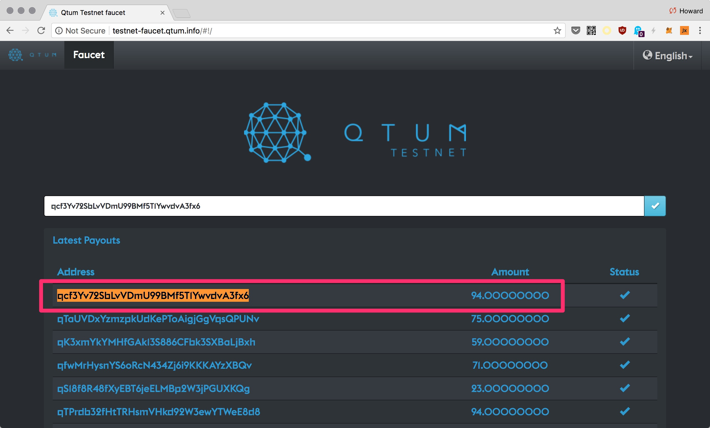
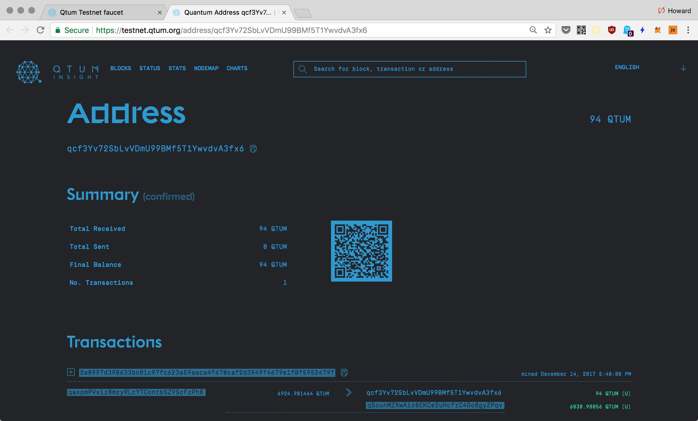

Test & Main Networks
The regtest mode is convenient for local development, but it comes a time when you want to test your smart contracts and DApp on the real network.
Connecting To The Testnet
The docker container connects to different networks depending on which QTUM_NETWORK is specified. By default, regtest is used. To connect to the test network, use testnet:
docker run -it --rm \
--name qtumd_testnet \
-v `pwd`:/root \
-p 23888:23888 \
-p 13888:13888 \
qtum/qtum \
qtumd -testnet -rpcbind=0.0.0.0:3889 -rpcallowip=0.0.0.0/0 -rpcuser=qtum -rpcpassword=testpasswd
-p 13888:13888is the p2p port for the testnet, so other nodes can connect to you.
It takes some time to download the blockchain data from the network. You'll see log messages like this stream by:
2022-06-30T23:12:56Z Synchronizing blockheaders, height: 2000 (~0.17%)
2022-06-30T23:12:56Z Synchronizing blockheaders, height: 4000 (~0.34%)
2022-06-30T23:12:57Z Synchronizing blockheaders, height: 6000 (~0.51%)
2022-06-30T23:12:57Z Synchronizing blockheaders, height: 8000 (~0.68%)
2022-06-30T23:12:58Z Synchronizing blockheaders, height: 10000 (~0.85%)
2022-06-30T23:12:58Z Synchronizing blockheaders, height: 12000 (~1.02%)
2022-06-30T23:12:59Z Synchronizing blockheaders, height: 14000 (~1.19%)
2022-06-30T23:12:59Z Synchronizing blockheaders, height: 16000 (~1.36%)
2022-06-30T23:13:00Z Synchronizing blockheaders, height: 18000 (~1.53%)
2022-06-30T23:13:00Z Synchronizing blockheaders, height: 20000 (~1.70%)
2022-06-30T23:13:01Z Synchronizing blockheaders, height: 22000 (~1.87%)
2022-06-30T23:13:01Z Synchronizing blockheaders, height: 24000 (~2.05%)
2022-06-30T23:13:01Z Synchronizing blockheaders, height: 26000 (~2.22%)
2022-06-30T23:13:01Z Synchronizing blockheaders, height: 28000 (~2.39%)
2022-06-30T23:13:02Z Synchronizing blockheaders, height: 30000 (~2.56%)
// synchronizing with network...
progressapproaches 1.0 (100%) as your local node catch up to the network.heightthe latest block that had been synced.
Keep in mind that to use Janus you will need to enable indexing -txindex -addrindex=1 -logevents which significantly increases the time to sync the blockchain
Visit the Testnet Block Explorer to see some stats about the test network. In particular, it lists the latest blocks mined, so you can get a rough idea of how far along you are in the synchronization process:

As of July 2022, the block height is about 2 million.
Getting Testnet Tokens
For the testnet you are not allowed to generate or mine new blocks to get tokens. Rather, you can request some free tokens from the testnet faucet:
http://testnet-faucet.qtum.info
First generate a new payment address:
qtum-cli -rpcuser=qtum -rpcpassword=testpasswd getnewaddress
qcf3Yv72SbLvVDmU99BMf5T1YwvdvA3fx6
Then copy it into the input box:

http://testnet-faucet.qtum.info
Once accepted, you should see your address and amount in the list of latest payouts:

Clicking on the pay out address, you'd see a link to view the transaction in the testnet block explorer:

https://testnet.qtum.org/address/qcf3Yv72SbLvVDmU99BMf5T1YwvdvA3fx6
Tapping ctrl-r madly to refresh the browsers again and again, because it'll help the network to confirm the transaction faster. Once it's confirmed, you can check your balance locally:
qtum-cli -rpcuser=qtum -rpcpassword=testpasswd getbalance
94.00000000
You can also see the UTXOs created for that amount:
qtum-cli -rpcuser=qtum -rpcpassword=testpasswd listunspent
[
{
"txid": "2a8997d398633bc01c97fc623a59aaca4f678caf2d3949f4679e1f0f5952479f",
"vout": 0,
"address": "qcf3Yv72SbLvVDmU99BMf5T1YwvdvA3fx6",
"account": "",
"scriptPubKey": "76a914d17c851679a8ca558d9d783643cc926f7a382e7888ac",
"amount": 94.00000000,
"confirmations": 23,
"spendable": true,
"solvable": true
}
]
But sorry, there's no http://faucet.qtum.info : p
Main Network
To connect to the mainnet, drop -testnet or -regtest:
docker run -it --rm \
--name qtumd_mainnet \
-v `pwd`:/root \
qtum/qtum \
qtumd -rpcbind=0.0.0.0:3889 -rpcallowip=0.0.0.0/0 -rpcuser=qtum -rpcpassword=testpasswd
Note that we've omitted the -p flags, so the network ports are not accessible outside the container.
It's safer to do your things by shelling into the container:
docker exec -it qtumd_mainnet sh